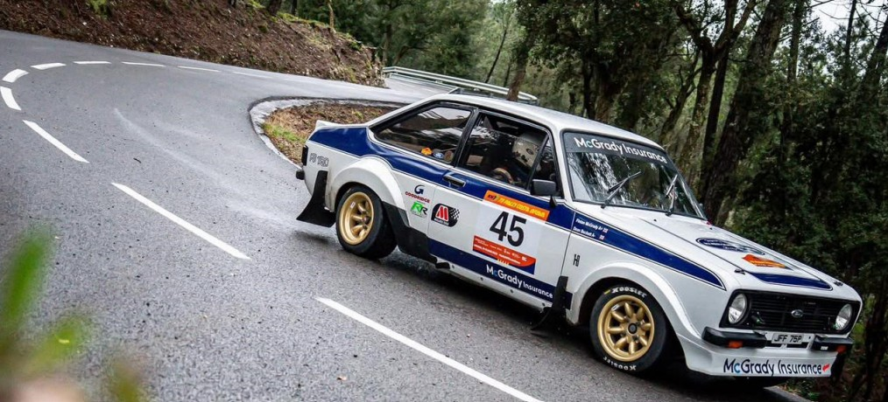
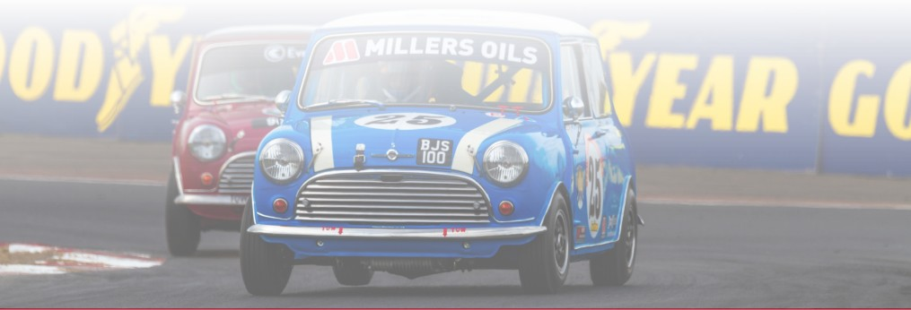
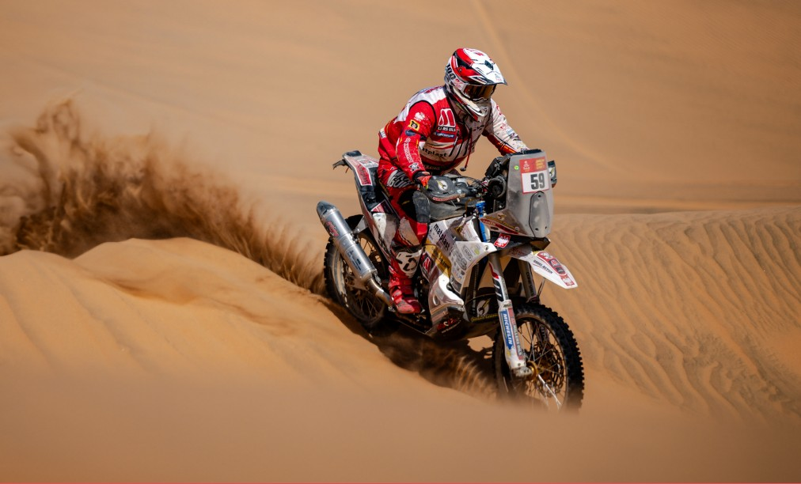

From Irish Rally Stages to the Dakar Desert: How Millers Oils Keeps Engines Alive
Millers Oils have been putting out some brilliant case studies recently. Not spec sheets or lab numbers. Real stories from real people who put these products to work in the harshest conditions going and came out the other side with engines and gearboxes in better shape than anyone expected.
We read through them all and picked out four that stood out to us. Whether you're into rallying, classic cars, motorcycles, or you just want your diesel to stop throwing up warning lights, there's something in here for you.
We stock every single product mentioned in this article.
Case Study
Fintan McGrady: 2,000+ Rally Stage Miles, Zero Breakdowns

This one is close to home. Fintan McGrady has been rallying Modified and Historic Ford Escorts across Ireland, the UK, and Europe for years. Gravel stages, asphalt, the lot. If you know anything about rallying, you know what that does to an engine and gearbox. Sustained high loads, wild temperature swings, huge mileage between rebuilds, and the kind of stress on driveline components that sorts the good oils from the average ones very quickly.
Fintan's approach to lubrication is simple but disciplined. He runs Classic Pistoneeze 10W-30 in the engine and changes it every 300 stage miles. For the gearbox, it's Classic Gear Oil EP 140 GL4, changed every two events. No shortcuts, no skipping intervals. And the results speak for themselves.
Over 2,000 stage miles in a 300hp Ford Escort with a Redtop alloy engine. Another 1,200 stage miles in a Historic Escort with a BDA engine, including the Roger Albert Clark Rally, the Northern Ireland Rally Championship, and the European Historic Rally Championship. And across all of that: not a single mechanical breakdown.
The Strip-Down That Surprised Everyone
Here's the bit that really tells the story. When Sherwood Engines stripped down the Historic BDA engine, they actually queried the mileage. They couldn't believe the internals were in such good condition for the miles it had covered. Fintan told them he was running Millers Oils and changing it religiously every 300 stage miles. That was the explanation.
The Redtop engine was even more impressive. When it went for a rebuild, it needed zero component replacements. The ZF 5-speed gearbox only needed routine synchro hub replacement with minimal wear. For a rally car that had covered over 2,000 competitive stage miles, that is remarkable.
Fintan's campaign ended with an invitation to FIA Headquarters in Paris, where he picked up the award for Best Prepared Car in the European Historic Rally Championship. His car carried Millers Oils branding throughout the championship.
"I can't talk highly enough about your products and believe they provide superior protection for my expensive engines and gearboxes." Fintan McGrady
The Products Fintan Uses
 Classic Pistoneeze 10W-30
Semi-synthetic classic engine oil
€45
Classic Pistoneeze 10W-30
Semi-synthetic classic engine oil
€45
 Classic Gear Oil EP 140 GL4
Classic gearbox & differential
€16
Classic Gear Oil EP 140 GL4
Classic gearbox & differential
€16
If you're running a classic or competition engine and you're not on Millers, it's worth thinking about what Fintan's results tell you. The oil you choose is the cheapest form of engine insurance there is.
Read the full Fintan McGrady case study (PDF)
Case Study
How a Simple Fuel Additive Saved a Fleet Thousands
This one is worth knowing about if you run diesel. It doesn't matter if you have a fleet of trucks or just your daily driver. The problem is the same and the fix is surprisingly cheap.
Premier Waste Services are one of the UK's largest skip and waste container operators. Based in Hyde, Greater Manchester, they cover serious mileage across the UK. In 2021, they bought six brand new trucks. Should have been straightforward. Instead, the dashboard warning lights came on almost immediately.
The Problem
The diagnosis was blocked Diesel Particulate Filters (DPFs), clogged injectors, and fouled EGR valves. Every DPF replacement was costing around £900. And because Premier Waste uses specific trucks for specific jobs, even one truck off the road disrupted the whole operation. The repair bills were stacking up fast and the downtime was hurting their ability to service clients.
The Fix
Millers Oils recommended adding a fuel treatment to the fuel tank at their yard. All the trucks filled up there, so every vehicle got treated fuel automatically. The problems stopped. Simple as that.
The Twist
Here's where it gets interesting. Fuel prices went up, so Premier Waste switched to a fuel card system and started filling at a nearby supermarket instead. Cheaper fuel, but no treatment. Within 2 to 3 weeks, the exact same problems came back. Warning lights, blocked DPFs, the lot.
So they called Millers again. The revised approach was just as straightforward: drivers were given the fuel treatment and told to add it to the tank before filling up at any station that wasn't the home yard. The problems disappeared again and stayed gone.
That's about as clear a before-and-after as you'll ever see. Treated fuel: no problems. Untreated fuel: problems within weeks. Treated again: problems gone.
What This Means for You
You don't need a fleet of trucks to benefit from this. If you drive a diesel, a fuel additive is some of the cheapest maintenance you can do. Our Diesel Particulate Cleaner and Regenerator is just €10 for a 250ml bottle that treats 60 litres of fuel. Millers recommend using it every 2,000 miles, or more often if you do a lot of stop-start driving where the DPF doesn't get a chance to regenerate properly.
If you're on petrol, Petrol Power Eco Max does a similar job, and it's especially useful now that E10 ethanol fuel is standard. It protects against the corrosion and deposits that ethanol can cause. Starts at €20.
And if you want an all-in-one solution, VSPe Power Plus handles lead replacement, ethanol protection, and fuel system cleaning in one bottle. From €15.
Compare any of those prices to the cost of a DPF replacement and it's a no-brainer.
 Diesel Particulate Cleaner
DPF cleaner and regenerator
€10
Diesel Particulate Cleaner
DPF cleaner and regenerator
€10
 Petrol Power Eco Max
Ethanol E10 protection
From €20
Petrol Power Eco Max
Ethanol E10 protection
From €20
 VSPe Power Plus
All-in-one fuel treatment
From €15
VSPe Power Plus
All-in-one fuel treatment
From €15
You can also browse the full Fuel Treatments & Additives range here.
Read the full Premier Waste Services case study (PDF)
Case Study
Sime Racing: A 1964 Mini Cooper S Still Winning Championships

This is a proper family story. Jimmy and Barry Sime, father and son, have been racing together for years. Jimmy started back in the late '60s. Barry came up through karting in the '90s. Their car is a 1964 Morris Mini Cooper S that has been in the Sime family since 1966. It sat unused from 1971 apart from one hillclimb outing in 1983, and then in 2013 they started a full restoration. By early 2016, the car was back on track and competitive.
The Shared-Sump Challenge
If you know classic Minis, you know about the shared sump. The engine and gearbox share the same oil supply. That makes choosing the right oil absolutely critical. You need something that protects highly stressed engine components while also handling the shear forces from the gearbox. Get it wrong and you're looking at accelerated wear, lost performance, premature rebuilds, or worse.
Sime Racing went with Motorsport CTV Mini 20W-50. It's a specialist competition oil developed specifically for classic Minis with shared sumps. The formulation uses NANODRIVE technology, which delivers up to a 36% reduction in friction while providing exceptional wear protection. It uses high-quality synthetic and mineral base oils with shear-stable viscosity improvers, and it's formulated to cope with the combined engine and gearbox loads without affecting clutch performance.
Championship Results
The results since switching to Millers have been consistent and impressive:
- CTCRC 2025: Class C Champion, Overall 2nd
- CTCRC 2024: Class C Champion, Overall 3rd
- CTCRC 2023: Class C 2nd, Overall 2nd
- CTCRC 2022: Class C Champion, Best Prepared Car in the Championship
That's four consecutive years at the front of the grid. But the results on track only tell half the story. What really impressed us was what their engine builder found when he looked inside.
"Notably, our engine builder remarked on the superior condition of internals compared to engines using alternative oils. It's evident that Millers Oils contribute significantly to our engine's performance and longevity." Barry Sime, Sime Racing
A race-tuned A-series engine in a competitive Mini, being pushed hard every weekend, and the internals are in better condition than engines running other oils. That says a lot.
Millers also provided ongoing oil analysis as part of the package, so Sime Racing could catch any wear trends early and make informed decisions before problems developed. That kind of technical support goes beyond just selling a bottle of oil.

If you're running a classic Mini, this is the oil that was built for it. We have it in stock for €66 for 5 litres.
Read the full Sime Racing case study (PDF)
Case Study
ZFS 4T Performance: Proven at the Dakar Rally

The Dakar Rally is about as extreme as motorsport gets. Thousands of kilometres across desert, dunes, and rock in extreme heat. There is no margin for mechanical weakness. If your oil isn't up to it, you're going home early.
In 2025, Millers Oils partnered with Polish rally-raid competitor Bartlomiej Tabin to put a brand new product to the test. ZFS 4T Performance 15W-50 was a pre-launch oil. It hadn't gone on sale yet. And they chose to debut it at the Dakar Rally. That tells you something about how confident they were in the formulation.
The Challenge
Motorcycle engines at Dakar deal with sustained high temperatures, full-load operation for hours on end, fine dust and sand contamination, and rapidly changing conditions across massive distances. For a product that hadn't been publicly released yet, this was the ultimate proving ground. Controlled lab testing is one thing. Thousands of kilometres of continuous maximum stress in the desert is another.
The Results
Dakar 2025: Tabin completed the entire event with zero lubrication-related issues. He finished 2nd in the Veteran Trophy category, his first ever Dakar podium. Engine condition remained stable throughout.
Dakar 2026: He came back with the exact same oil. Zero engine issues again. When a rider trusts the same oil enough to return to the toughest race in the world, that's not marketing. That's confidence built on results.
"Dakar is a very demanding challenge at the highest level. That is why I always rely on the most advanced technological solutions. Millers Oils ZFS 4T Performance motorcycle range offers maximum protection for the engine of my bike." Bartlomiej Tabin
The success at Dakar directly influenced the product range. What started as two products has since grown into a seven-product lineup covering a broader range of viscosities. Race-proven technology that's now available to everyone.
The ZFS 4T Performance 15W-50 is a fully synthetic oil built with advanced ester technology. It meets API SN and JASO MA2 specifications, which means it's suitable for road and track use in air and water-cooled motorcycles with wet clutches. Strong oil film retention, excellent thermal stability, and consistent protection over long distances.

We stock this for €50 for 4 litres. If it can handle the Dakar, it can handle your weekend run.
Read the full Dakar Rally case study (PDF)
Real Results, Not Lab Figures
That's the thread that runs through all of these case studies. These aren't theoretical performance claims. They're real people, in real conditions, getting real results. An Irish rally competitor with zero breakdowns over 2,000+ stage miles. A fleet operator who proved, twice, that fuel treatment works. A father-and-son Mini racing team winning championships year after year. And a Dakar rider who trusted a pre-launch oil at the toughest race on earth and came back for more.
We stock every product mentioned in this article. If you're not sure which one is right for your vehicle, just get in touch. We're always happy to help.